Name:Hira Bahadur Rana Kauchha
CSY-1018: WEB DEVELOPMENT
UoN ID:18413703
Name:Hira Bahadur Rana Kauchha
CSY-1018: WEB DEVELOPMENT
UoN ID:18413703
A task has been provided to make six web pages which will form a 'Web Development CV' to enchance skills in web development.So, before getting started a research on different website had been done. It was found that different personal website had uses java script, bootstrap, HTML& CSS. As the task has only allowed the use of HTML& CSS.Thus, all the six pages were done with only the use of HTML&CSS.
While gazing on some of the good personal websites on the internet it had been so helpful to develop the skill in web development. Most of those websites were more user friendly and can be viewed using many different devices like smartphones, tablets and desktops. Screenshot of the pages which had become the influential to author interface design has presented below:
Above mentioned web pages were so good enough and look so attractive which influenced the developer to create a good and quality website. Both the web pages were responsive means it can be viewed in different device like as tablet, smartphones and desktop. In sample1 the navigation bar was fixed. Both web pages were made with the use of javascript, bootstrap, simple HTML&CSS.
Wireframe for home page.
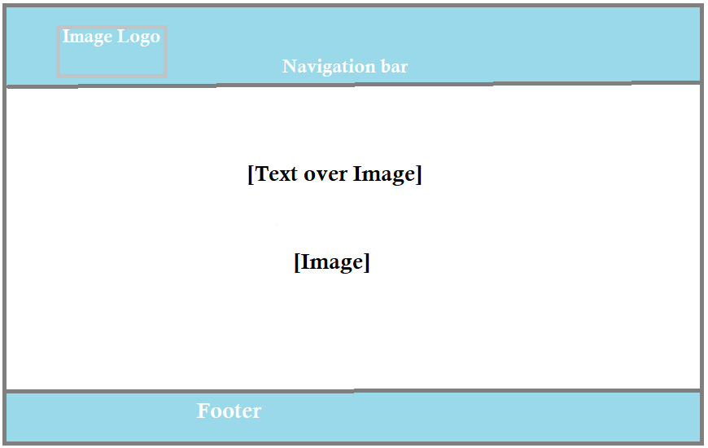Wireframe for Aboutme page
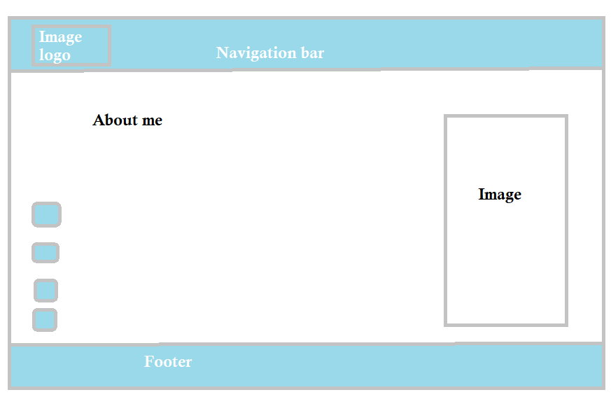Wireframe for Contact page
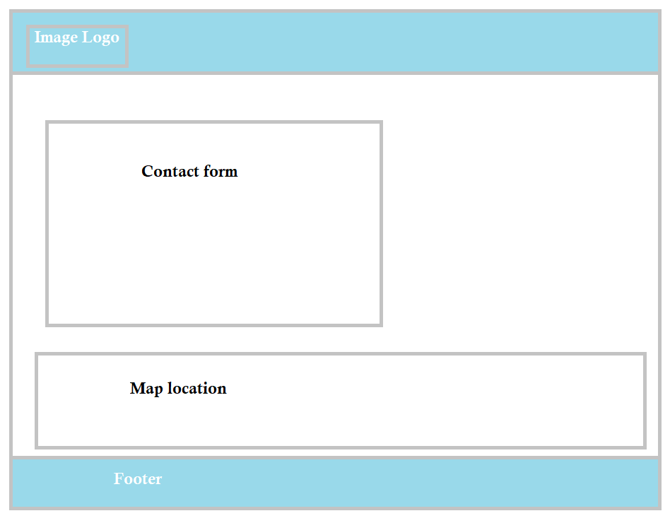Wireframe for CV page
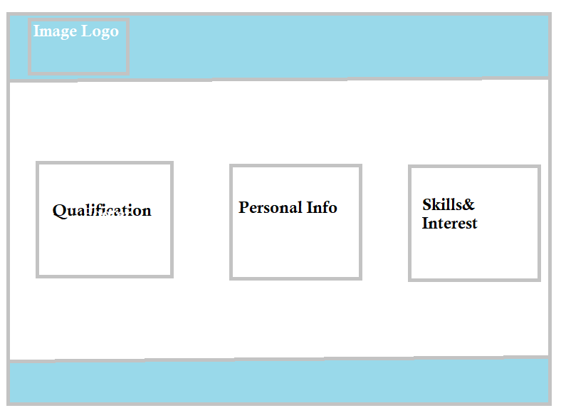Wireframe for Social page
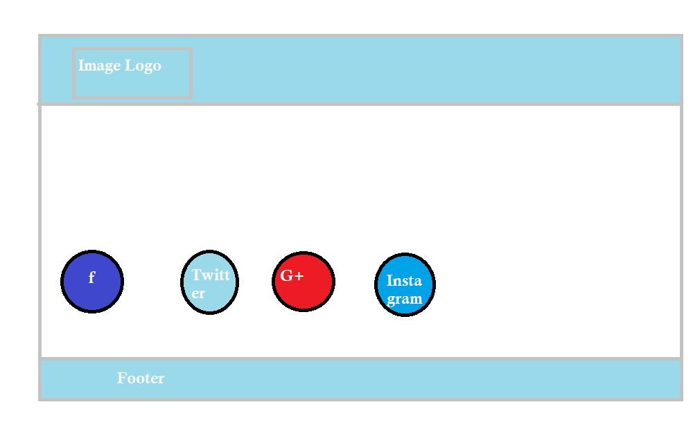As it had been already mentioned that developer was quite influenced by aboved mentioned webpages. So, getting idea from those web page developer plan to create simple with an elgeance webpage with his own code. Navigation bar and footer will be same for all the web pages. In home page an image of a developer will be kept in a section with making a div. There will be a text over an image with a transform animation. The footer will consist of social media icon. So people can may follow easily.
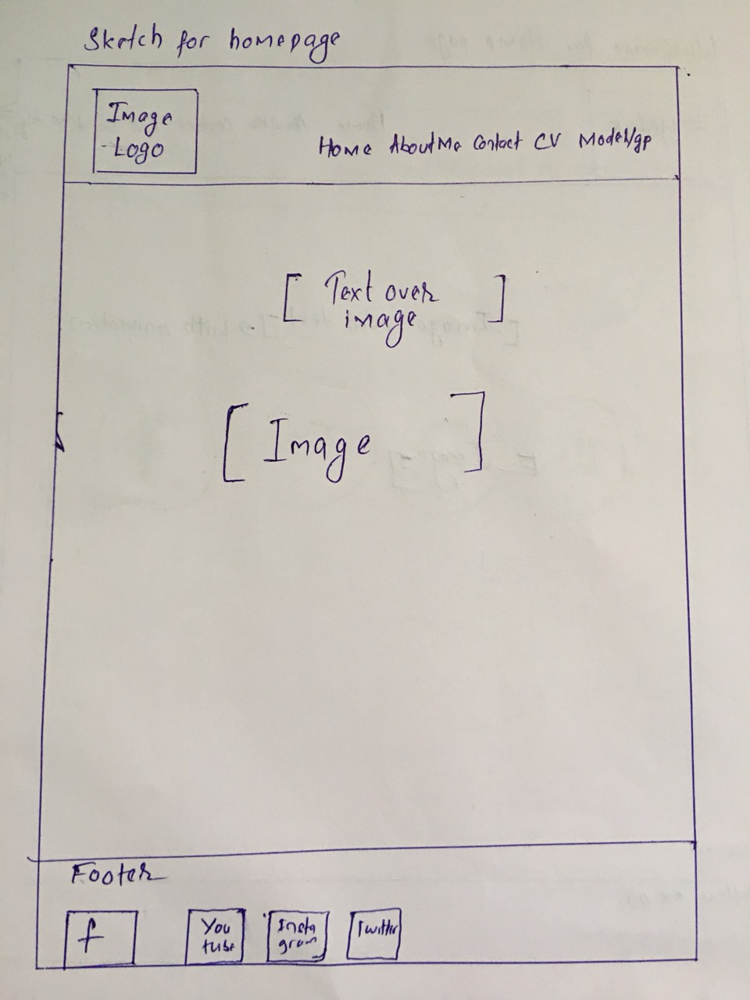The navigationbar and footer will be similar to home page. In the main body it will conatin a paragraph about developer and there be image of devloper in aside.Below the paragraph there will be an icon of graduation cap, location, phone.
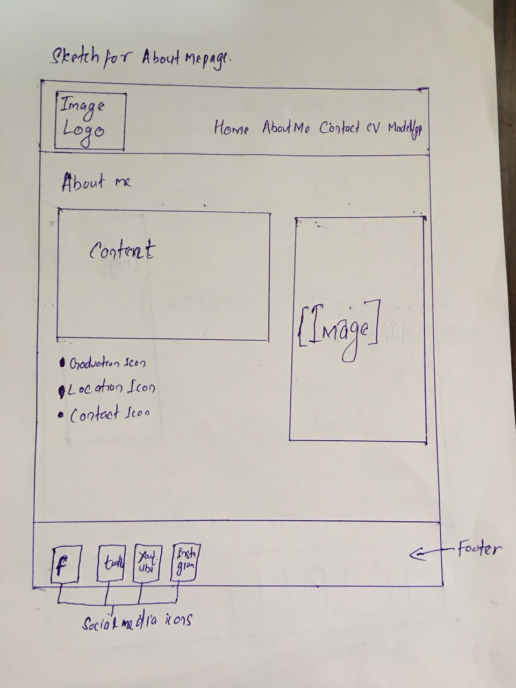This page will contain a contact form so that the users can easily contct with a developer through it.The contact form will check for validation along with it there will be a map location of developer. The navigation and footer will be same as of other pages.
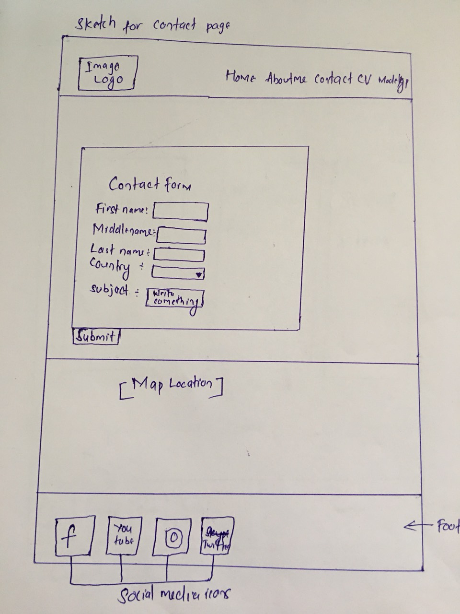This page will contain three table Qualification, My personal Info and Skills& Interest which will be display in a row using flex-direction row. Qualification will mentioned about the achievement of developer till the date. Personal Info table will execute the personal details of developer and Skills& Interests table will make clear about the interest and skills of developer.
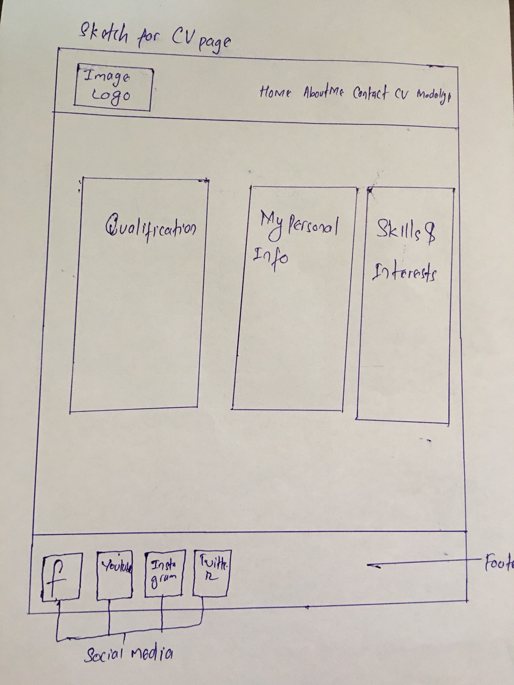This page will consist of different link of social media of a developer. The navigation bar and footer will reamin same.
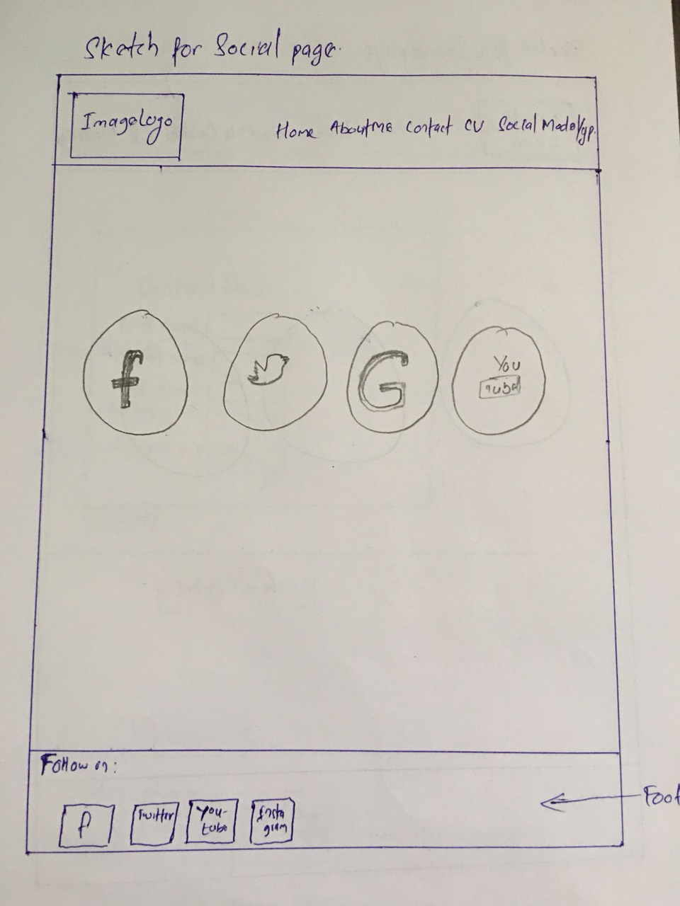In length of time of research on different CV webpage I was able to collect some idea. As having an advantages of good friends I share my idea with my friends, and they rendered me with a good suggestion. Me and my friends were brainstroming to develop User Interface desgin. How to make a userfriendly? How we can make it more attractive with good features and animation? With a hardwork of working on a group we finally made a website taking refrences from different online resume. Though we have work on a group to make a relevant User Interface the code and design were not similar to anyone. All of us had made own unique code and design. It was a productive to work with in a group where the idea were developed knowledge were shared among the groups. As per the suggestion of friend and with a little modification on it the website was developed.
1. Homepage
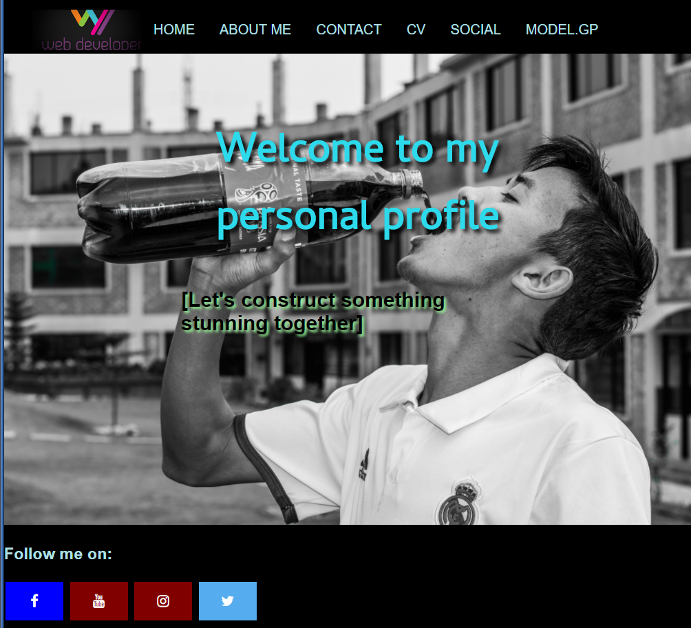As task has not allowed to use of java script, bootstrap we were compelled to use only simple HTML&CSS to develop a web page. Thus, all the pages were developed with use of simple HTML&CSS. The hompage consist of navigation bar on the top, image on section and footer on buttom. The nav bar consist of Home, AboutMe, Contact, CV, Social, Modelgp along with a image logo. The hover effect has been added in listed items in navigation bar. As the pointer hovered to element it changes it text color to maroon. The text has been added over the image which has been animated with transformation of rotateY(360deg). The footer consist of social media icon where the user can directly follow on them.
2. AboutMepage
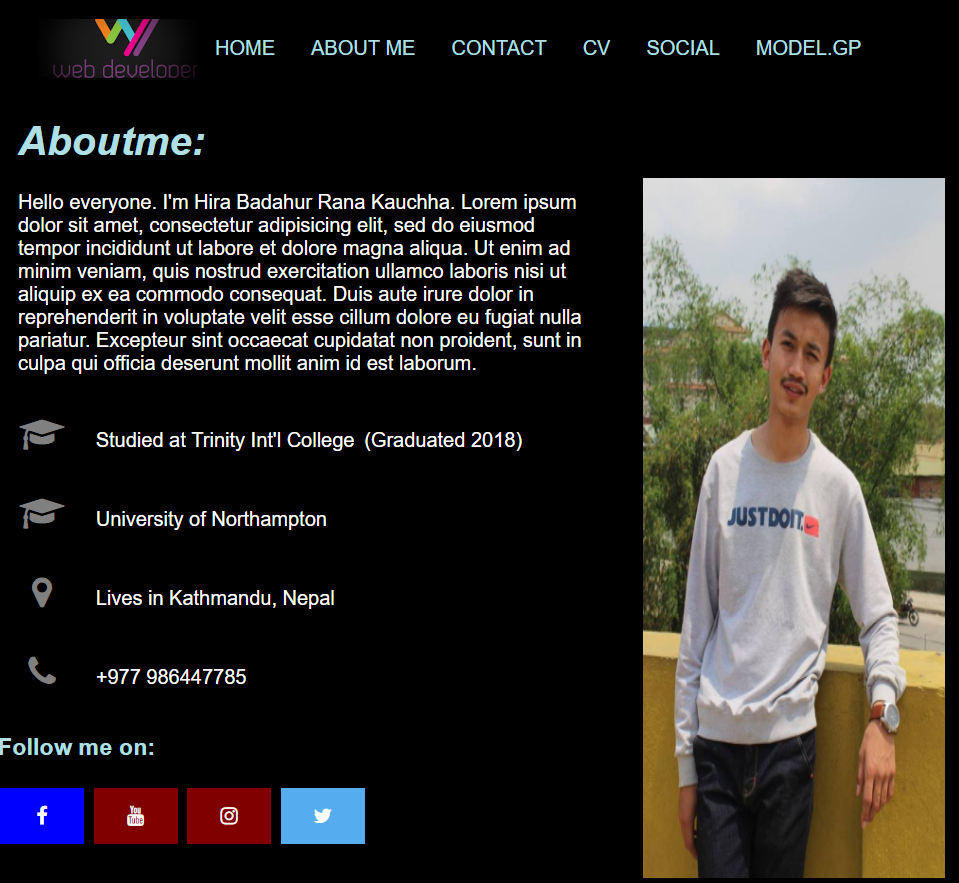The navigation bar and footer had made similar to all other pages. The section consist of image in aside, a paragraph about me had enclosed in a div. Icons of graduationcap, location and phone call had been used in a hope to made a good design.
3. Contactpage
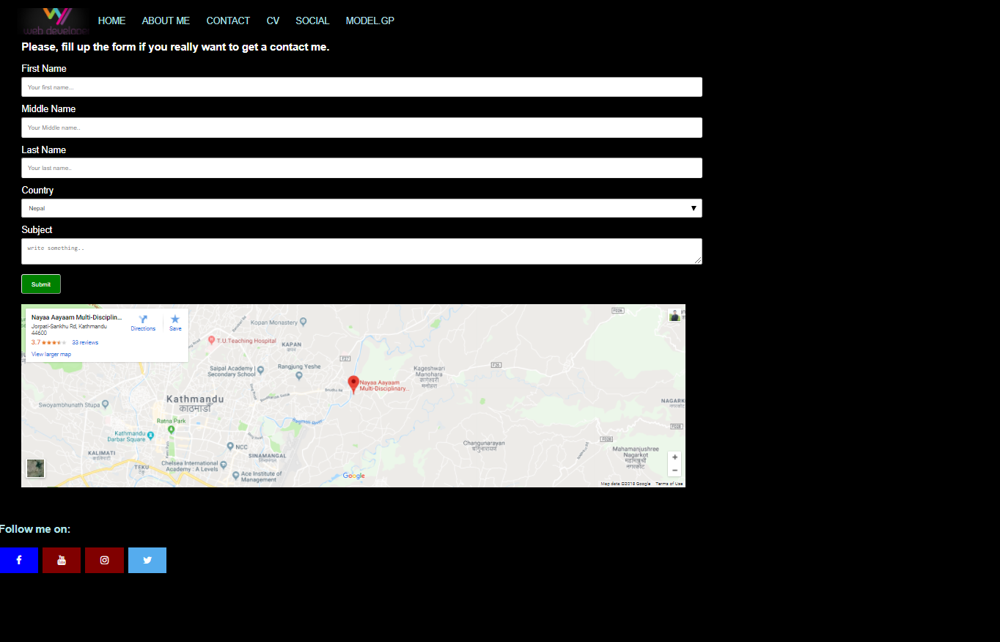This page consist of navigation bar at a top along with a image logo which had made up a similar effect to all other pages. In section a contact form has been made which checks for validation and below it there is a map with a location of developer. The footeer part consist of social media icons.
4. CVpage

This page also had a similar effect on listed element of navigation bar. An animation had added in the section of body with an animation duration of 4sec. The section consist of a table of qualification, two blocks of personal info and Skill&Interests. And the footer consist of social media.
5. Socialpage
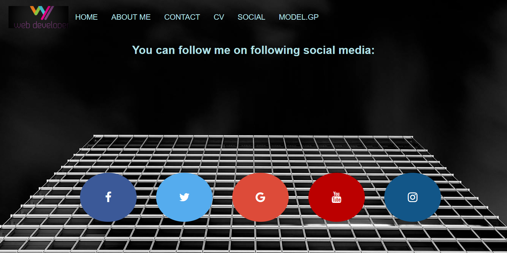The navigation bar and footer had made simliar to all web pages. This page consist of background image which I downloaded from Uniplash.com. The section consist of icons of social media which had been animated with transform of rotateY(5deg)to rotateY(360deg).
This is the responsive page of home page means it can be viewed in a smartphones, tablets and ipad with userfrirndly. As the size of page gets contract the listed element of navigation bar display in column. And the image fits with in size of page.
This is the responsive page of About me page. The navigation bar will display in column as similar to other page. The image in the section part which is in right aside will floats to left.
This is the responsive page of Contact page. The elements listed in navigation bar will display in column as the page gets contract.The width and height of map and contactform will fits with the size of image as per contraction
This is the responsive page og CVpage. The elements listed in navigation bar will display in column as the page gets contract.The table of qualification, block of pesonal info and Skills&Interests which was diplay in row will display in column as the web page get contracts.
This is the responsive page of Social page.The elements listed in navigation bar will display in column as the page gets contract.The social media icons which had added over background image will fits to screen of any smartphones, tablets, ipad.
Testing evaluation is a model of good practice which checks whether the project meets requirement as it needed or not. While doing testing there were few errors in each page. And then after rechecking gradually the errors were omitted from respective error.As the screenshot of every valid pages has been presented below.
Test of html code of web page.
Validation for homepage.
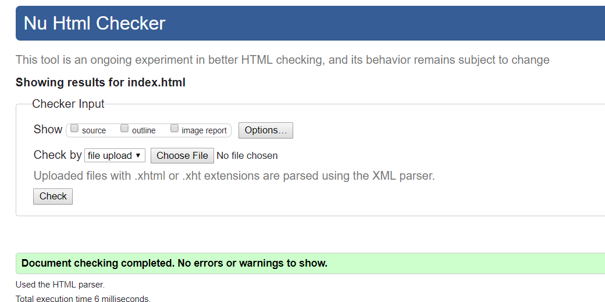Validation for aboutmepage
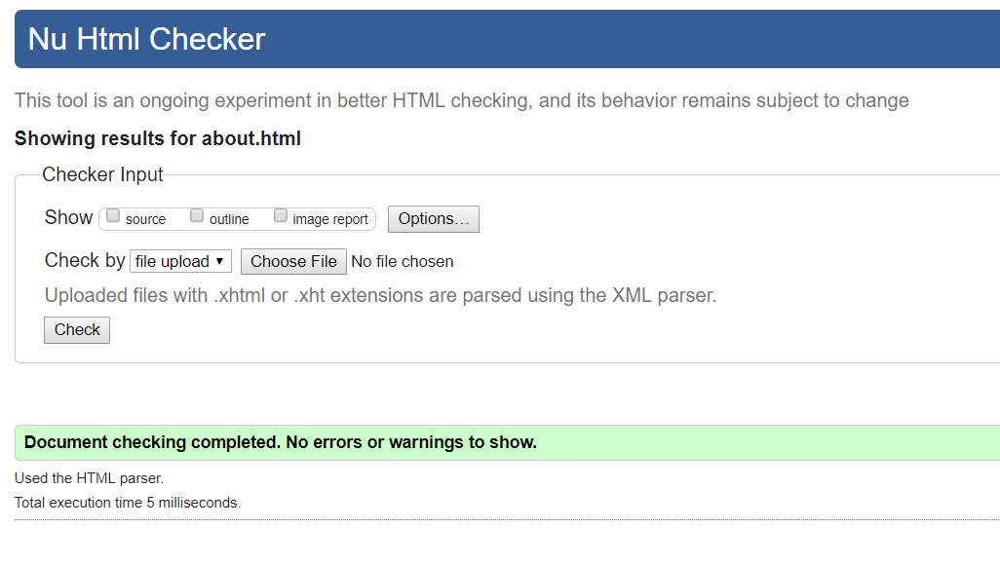Validation for contactpage
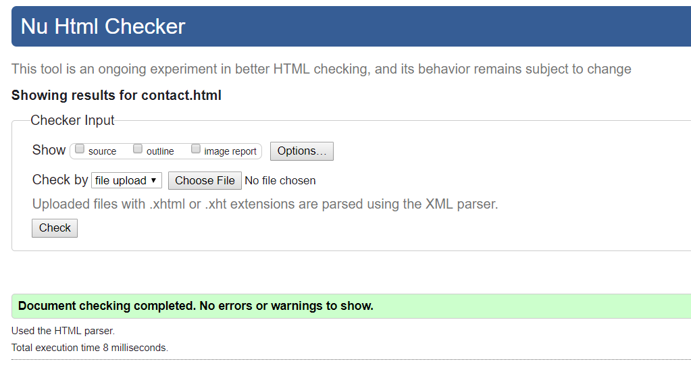Validation for CV page
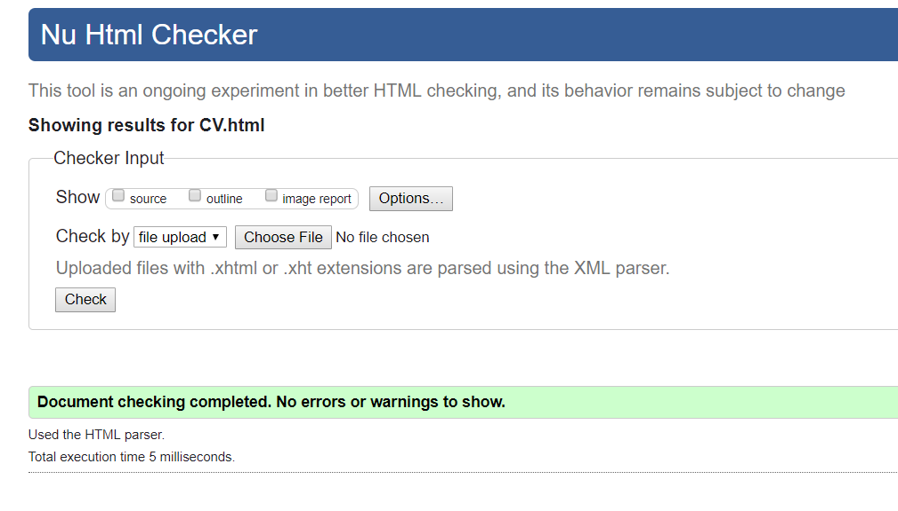Validation for Socialpage
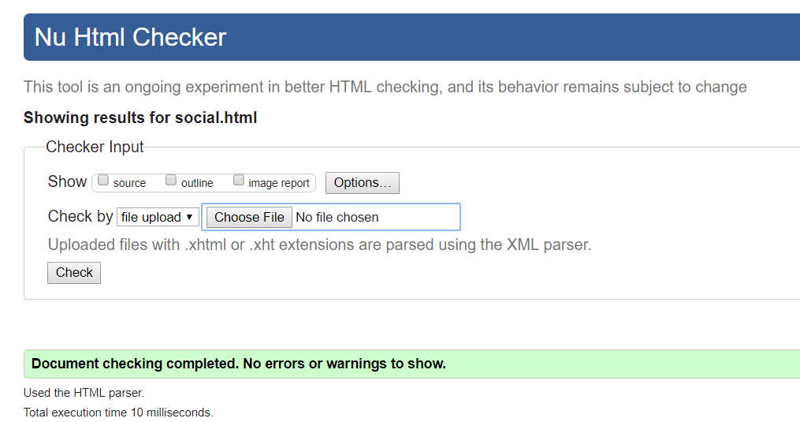Test of code of main.css
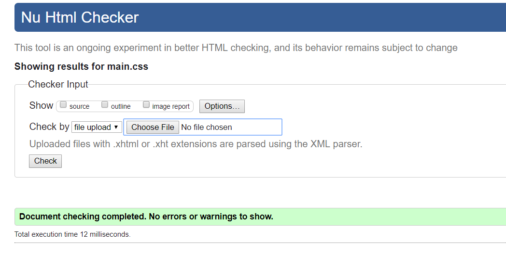At the end It was so productive time to create these six webpages where the idea were share among the friends and was able develop more knowledge on web development. The task had to be completed with use of simple HTML&CSS and were not allowed to used java script, bootstrap or any others program. Though the task was so challenging but developer manage to complete task sucessfully.